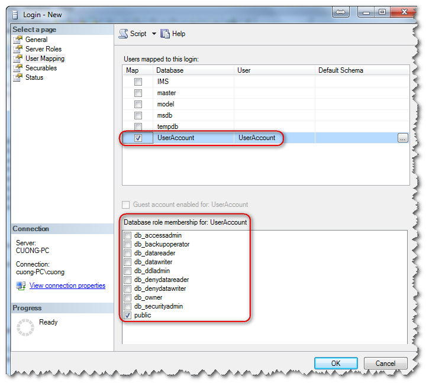

[MSSQL] – TỔNG QUAN VỀ USER VÀ BẢO MẬT USER
Chào các bạn,
Việc bảo mật truy xuất dữ liệu trong hệ quản trị cơ sở dữ liệu là công việc hàng ngày phải theo dõi để đảm bảo rằng việc truy xuất dữ liệu từ các chương trình ứng dụng thông suốt, không thừa, không thiếu.
Hơn thế nữa, khi triển khai hệ thống mới DBA cũng cần khảo sát và thiết lập bảo mật cho Database Account truy cập.
Nếu thiết lập không đúng, thiếu quyền thì không nói, dư quyền là một rủi ro rất lớn đến dữ liệu. Trong trường hợp mật khẩu Database bị lộ, bị hack thì hacker có thể phần quyền leo thang và chiếm toàn bộ dữ liệu của bạn một cách dễ dàng.

Khái niệm:
– Database Engine: Khi nói đến Database Engine nghĩa là nói đến hệ quản trị cơ sở dữ liệu được cài đặt trên máy chủ của bạn, có thể máy chủ của bạn cài đặt nhiều Instance, mỗi Instance được xem như là một Database Engine.
– Database: Khi nói đến Database nghĩa là nói đến một Database xác định đã được tạo trong Database Engine của bạn.
I.Các loại Role bạn cần lưu ý khi tạo Database Account (Bảo mật cấp độ Database Engine)
Theo tôi có hai loại Database Account mà các bạn cần lưu ý:
1. System Account : Tài khoản để quản lý toàn bộ hệ thống cơ sở dữ liệu của bạn, mặc định khi cài Microsoft SQL Server đã cung cấp cho chúng ta SA, account này mà toàn quyền trong CSDL của bạn. Các quyên thường phải có như : Create Database, Alter Database, Drop Database, cấu hình tham số máy chủ, backup, restore dữ liệu….
2. Application Account: Tài khoản để các chương trình ứng dụng truy cập vào hệ quản trị cơ sở dữ liệu của bạn. Thường thì một account application chỉ được phân quyền trên một hay nhiều Database có liên quan. Các quyền thường phải có như : Select, Insert, Update, Delete, Execute procedure…
Vậy làm sao để biết được quyền nào và cấp cho đúng với mục đích sử dụng tương ứng với từng loại Account ?
Trong Microsoft SQL Server đã cung cấp cho chúng ta một số nhóm(Group) tiêu chuẩn, mỗi group có những quyền tương ứng. Hay còn gọi là các Roles (Server Level Roles)

Chúng ta sẽ xem xem từng Role làm nhiệm vụ gì ?
– bulkadmin: Account nào là thành viên của Role này có thể thực hiện các lệnh BULK INSERT
– dbcreator: Account nào là thành viên của Role này có thể Create, Alter, Drop, và restore bất cứ một database nào
– diskadmin: Account nào là thành viên của Role này có thể quản lý các tập tin trên đĩa cứng
– processadmin: Account nào là thành viên của Role này có thể tắt các xử lý đang chạy trong instance của database engine
– public: Account nào là thành viên của Role này có quyền mặc định của Microsoft SQL Server.
– securityadmin: Account nào là thành viên của Role này có quyền quản lý các account khác và cấp quyền cũng như thu hồi quyền của các account khác. Hơn nữa còn có quyền re-set mật khẩu của các account khác,
– setupadmin: Account nào là thành viên của Role này có thể thêm hoặc xóa các linked Server và thực thi một số store procedure hệ thống.
– sysadmin: Account nào là thành viên của Role này có toàn quyền trên hệ quản trị cơ sở dữ liệu
II. Bảo mật cấp độ ci tiết Database
Như phần I, tôi đã giới thiệu các loại Role bảo mật cấp độ Database Engine. Cấp bảo mật cao nhất. Tiếp theo chi tiết hơn nữa là bảo mật cấp độ Database (Database Level Roles).
– db_owner: Account nào có role này có toàn quyền trên Database đó
-db_securityadmin: Account nào có role này có thể cấp quyền cho các account khác trong phạm vị database của account đó
-db_accessadmin: Account nào có role này có thể cấp quyền truy xuất database đó Windows login, Windows group và SQL Server logins.
-db_backupoperator: Account nào có role này có thể backup database
-db_ddladmin: Account nào có role này có thể chạy bất cứ câu lệnh DDL (Data Definition Language) trong database
-db_datawriter: Account nào có role này có thể thêm/sửa/xóa các dòng dữ liệu trong tất cả các user table trong database
-db_denydatawriter: Account nào có role này không thể thêm/sửa/xóa dữ liệu trong tất cả các user table trong database
-db_datareader: Account nào có role này có thể đọc dữ liệu tất cả các user table trong database
-db_denydatareader: Account nào có role này không thể đọc dữ liệu tất cả các user table trong database
Kết luận: Hiểu được cơ chế phân quyền của MS SQL Server gúp các DBA giảm thiểu được rủi ro cho hệ thống và đảm bảo dữ liệu được an toàn hơn.
LEAVE A REPLY